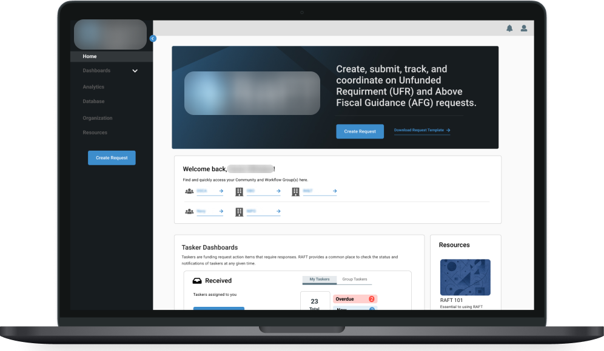

Streamlining Defense Funding Requests
Transformed an email-based funding process into a unified digital tool now used by 20+ Department of Defense agencies.

Transformed an email-based funding process into a unified digital tool now used by 20+ Department of Defense agencies.
A Department of Defense (DoD) agency that distributes tens of billions of dollars a year to support national security and foreign policy was struggling with one of its core processes.
The agency doesn’t carry out most of its programs itself. It funds implementing agencies, such as the military departments and other defense organizations, that do the work. When an implementing agency runs into a need its budget doesn’t cover, such as a requirement that went unfunded or costs above its allocation, it submits a funding request. The agency runs three separate annual processes, depending on the funding type, to review these requests and decide which to fund.
When requests stall, the cost is real: money can arrive too late in the year to spend.
“If you give me money at the middle of August, I’m pushing it in trying to get it awarded before 30 September.”
The agency brought in our team to help it improve these processes. During our initial interviews and workshops with our client, we discovered that their primary frustrations were:
Submissions were frequently incomplete, completed incorrectly, contained inaccuracies, or attached superfluous information. This led to chasing details, requesting rewrites, and asking due diligence questions, like “Was this reviewed by your Office of General Counsel?”
Submissions arrived after the deadline, which could cause delays and upend review steps like the prioritization of submissions.
Many weren’t properly vetted before submission, which added to the review burden.
The whole process was conducted over email with a mix of Word documents, Excel spreadsheets, and PDFs. This often led to data loss, and the lack of a single repository made analytics virtually impossible.
The ask
A submission portal
They therefore requested that we build them a submission portal that would require submitters to fill out all fields, only enter the requested information, and respect a submission deadline, all the while creating a single repository for all submission files.
Suspecting that this was only part of the problem, we requested and obtained permission to speak with submitters to conduct additional discovery. We asked about tasks, desired outcomes, information needs, frustrations, and roles, then synthesized the findings using Goal-Directed Design, capturing user needs as job stories.
34 interviews
The client had never interviewed submitters this way, and talking to them showed us the other side of the process. Some of their pains mirrored the client’s, while others never came up in our conversations with the client:
Once a request was submitted, submitters had no way to track the progress or know how close it was to being adjudicated.
Like our client, submitters had no straightforward way of performing analytics on past- or current-year submissions and review outcomes. Even finding records of previous-year submissions was difficult.
Raised only by submitters
Submitters complained, for example, of having to respond to many of the same questions multiple times from different reviewers.
The long time from submission to review decision often delayed funding, even to the point of having difficulty executing funds within a fiscal year.
Submitters did not understand how to correctly fill in the request, including confusion on the meaning of terminology used in the form.
Reviewers worked in parallel with no shared record, so submitters answered the same questions again and again.
“I don’t want to document the same stuff 10 times. Just tell me what info you need and then route that info internally to all the correct people.”
The most widespread pain, the review burden, traced back to upstream causes: unclear guidance on how to justify a request, an inadequate template, and too little vetting before submission.
Root causes
The result: a single request could bounce between reviewers and submitters again and again before it was ready for a decision.
“Sometimes it’s the same [request] has gone back and forth about 5, 10 times before we can get the right information.”
Given what we learned from submitters, we knew we would need to reframe the required solution. Many of the issues in the process were systemic. A submission portal would only treat some of the symptoms, not the root causes. Worse, a portal could become a new chokepoint. It would enforce the client’s requirements at the moment of submission without supporting how submitters actually write, review, and route requests beforehand.
Therefore, we needed to solve not just for the symptoms experienced by our client, but for the whole process, beginning to end. This meant solving for drafting, coordination, and review, in addition to submission.
We presented our research findings to the client, emphasizing the need for a systems view of the problem and therefore a coordination tool as our primary solution. The coordination tool would keep the portal’s core strengths, like a standardized digital form with built-in guidance, and extend support across the rest of the process. We recommended the following high-level design decisions:
A digital form that shows only the fields relevant to each request, replacing the myriad Word and Excel templates.
Roles defined by the situation and guided by user knowledge, instead of fixed paths, so each organization could route requests its own way.
One tool for all three request processes, streamlining the work and centralizing the data.
“The new design of the funding request processes will lower the overall workload of requirement owners and reviewing officials. By providing enhanced and dynamic funding request templates, it will improve the quality of submissions and reduce the amount of necessary reworks. By providing a centralized workflow, it will streamline the funding request processes and increase visibility into the current status of submissions, which will lower the burden of manual coordination. In addition, because funding requests of all types will be created and shared in a central location, it will establish a repository of records that increases information accessibility.”
The client was persuaded by the research findings and design vision, and enthusiastically agreed to pivot from a submission portal to a workflow coordination tool.
Following our research, we moved into design with three constraints:
Support drafting, coordination, and review across three separate processes for non-linear workflows where roles shift contextually.
While our client would own the tool, dozens of independent agencies would be using it too, and they didn’t want the client seeing “how the sausage is made.”
Many users would touch the tool only once or a few times a year, so it had to be easy to pick back up.
| LinearOne route, regardless of circumstances. Can be automated. | Non-linearMany routes, depending on circumstances. A human decides. | |
|---|---|---|
| ConcentratedOne person or group controls the whole process. | ExampleA monthly payroll run: one team, the same steps every time. | ExampleA support ticket: one agent decides the next step, case by case. |
| DistributedDifferent people or groups control different parts. | ExampleAn assembly line: each station owns its step, always in the same order. | The funding request processMany routes, many owners |
One research insight gave us confidence that all three would be achievable: once we abstracted dozens of job titles and responsibilities down to job stories, we found a striking amount of overlap and commonality.
| Goal | Client analyst | Agency reviewer | Request author | Subject-matter reviewer |
|---|---|---|---|---|
| Generate | ||||
| GuideEnsure processes are followed | ||||
| EvaluateDetermine if a request is needed | ||||
| DraftWrite the request | ||||
| Review | ||||
| AssessUnderstand the received request | ||||
| GatherCollect the perspectives and information needed | ||||
| ReworkImprove the quality of a request | ||||
| RecommendFund or deny a request | ||||
| Communicate | ||||
| PresentBring a recommendation to leadership | ||||
| ShareCommunicate the decision to stakeholders | ||||
As we left behind our early research phase, we entered into a recurring tempo of weekly syncs with our main client points of contact, and regular meetings with additional stakeholders for co-creation and validation (roughly a few times a month).
To keep the tool simple, we used semantic interaction design, an approach from Daniel Rosenberg’s UX Magic that treats a system like a language. It posits that the fewer objects and actions users have to learn, the lower the cognitive load. We built a conceptual model grammar matrix in four steps:
| Create / Add | Delete | Complete | Edit | Accept / Deny | |
|---|---|---|---|---|---|
| Funding Requests | × | × | × | × | |
| Taskers | × | × | × | × | × |
| Reviews / Decisions | × | × | × | × | |
| Groups | × | × | × | ||
| Users | × | × | × | ||
| Documents | × | × |
Example simplifications
Over several months, we compressed it from 112 possible object-action combinations to 30: six objects and five actions. Along the way, separate review and rework requests merged into a single object, the tasker, which became the tool’s core unit of coordination.
We also separated transactional actions, which change data, from non-transactional ones like search, filter, sort, and export, which only change what you see. Only transactional actions went into the matrix, keeping it focused on how the system’s data actually changes.
The final set
Starting from this model let us:
With that foundation formed, we systematically worked through several core design challenges.
The challenge
Our approach
The challenge
Our approach
Shared with everyone on the request
Need-to-know only
The challenge
Our approach
The challenge
Our approach
Over email, every reviewer’s questions became another thread, and sometimes all that effort went into a request that wasn’t valid.
“After we receive the funding request, sometimes we ask like a hundred questions… after we have all the information, the funding request may not even be a valid requirement. There’s a lot of those.”
The challenge
Our approach
The challenge
Our approach
The challenge
Our approach
“You captured all the things that we addressed when we had our original kickoff meeting. So it was great. It’s a very useful tool; it looks like it’s going to help tremendously with back-and-forth, and just being able to have a repository of all [funding requests]. It will be leaps and bounds above where we are now, without having to search through share drives and emails.”
Launched December 2021
As we finalized designs, we had an important shift in the delivery method. We had originally planned to work with a government development shop to build and deploy the tool. However, its workload was so high that it was unclear when they would be able to begin work on it. Drawing on the strong working relationship we’d built, we pitched the client on taking on development ourselves. They agreed and funded our team to handle delivery, and the tool launched in December 2021.
In the first two years following launch
The clearest sign of success: the client hired us for two follow-on projects that I would lead:
Extending the tool to cover the requirements gathering and prioritization process.
Adding features and capability to further streamline and support their funding request processes.
Weeks of intense, rigorous research and synthesis gave us confidence to redirect the client from a submission portal to a coordination tool, providing them greater value and solving more of their problems.
We started without one, and de-risked designs through regular check-ins with the client’s lead developer. Once we had integrated developers towards the end of the project, we gained a lot of efficiencies and improved our technical de-risking.